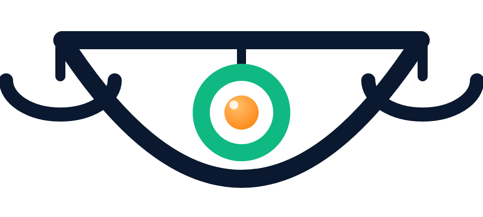
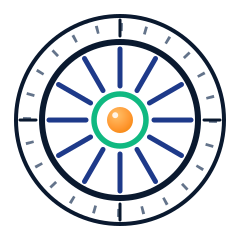
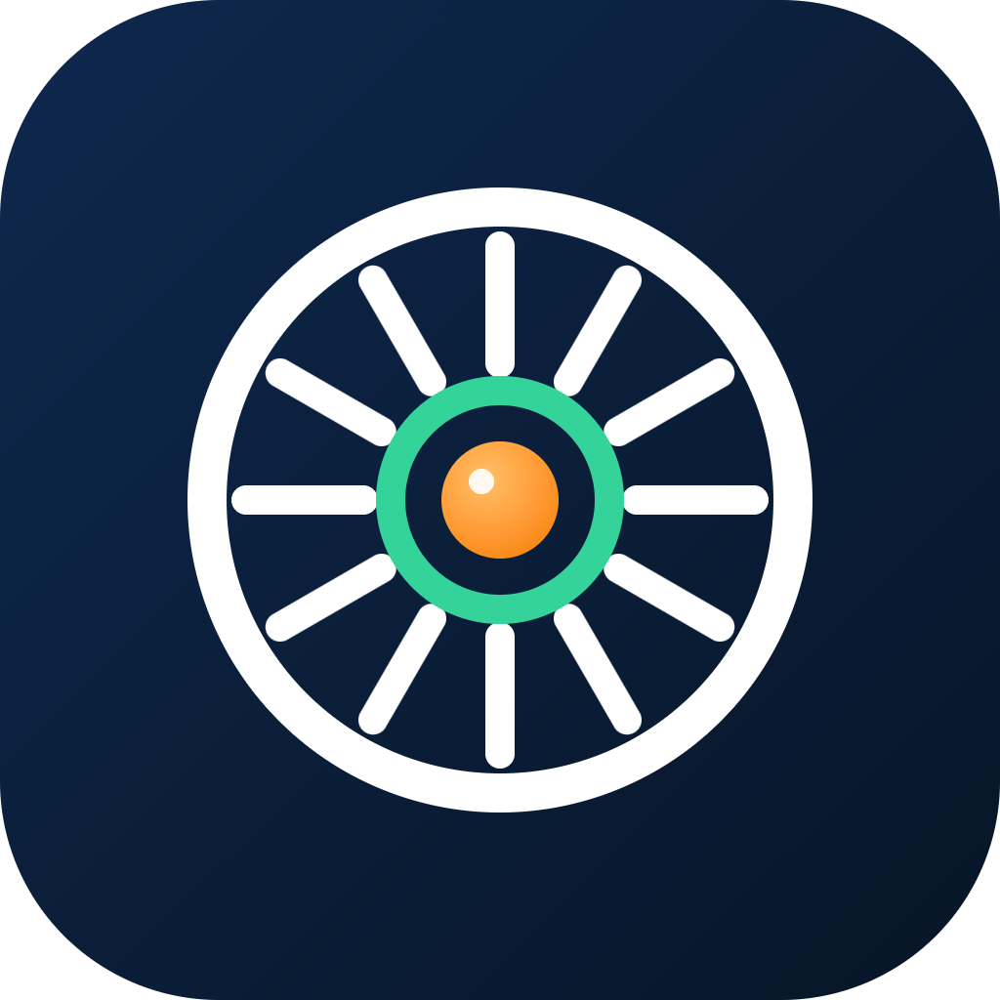
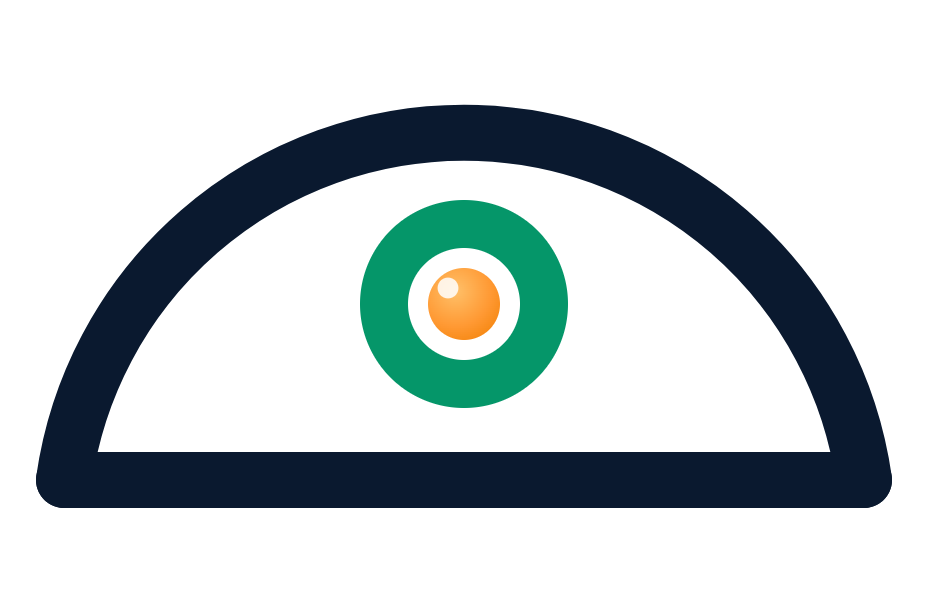
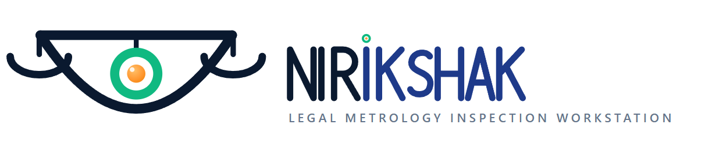
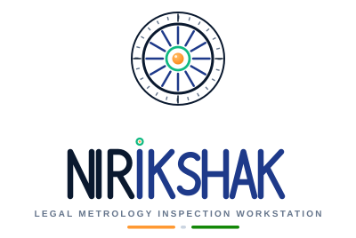

Hero banner (README) — light
Tula Netra mark in a fine ring over soft aurora pastels · 4-state verdict dots

Concept A — Tula Netra (Eye of the Scales)
Beam-upper-lid eye · hanging pans · iris as plumb bob

340px
96
48
24
Concept B — Drishti Chakra (Seeing Wheel)
Measuring dial ticks · chakra spokes · lens-hub pupil

300px
96
48
24

Concept C — Mudra Seal (Verified Weight Seal)
Government-style seal · standard weight · check stamp
300px
96
48
24
Concept D — Level Eye (Instrument)
Spirit-level vial as the eye · iris bubble in tolerance · 2-primitive instrument

300px
96
48
24
Wordmark & Lockups
Custom monoline caps: NIR navy · IKSHAK indigo · seeing-tittle · tricolor rule

wordmark 480px
binocular variant

horizontal

stacked
app icon